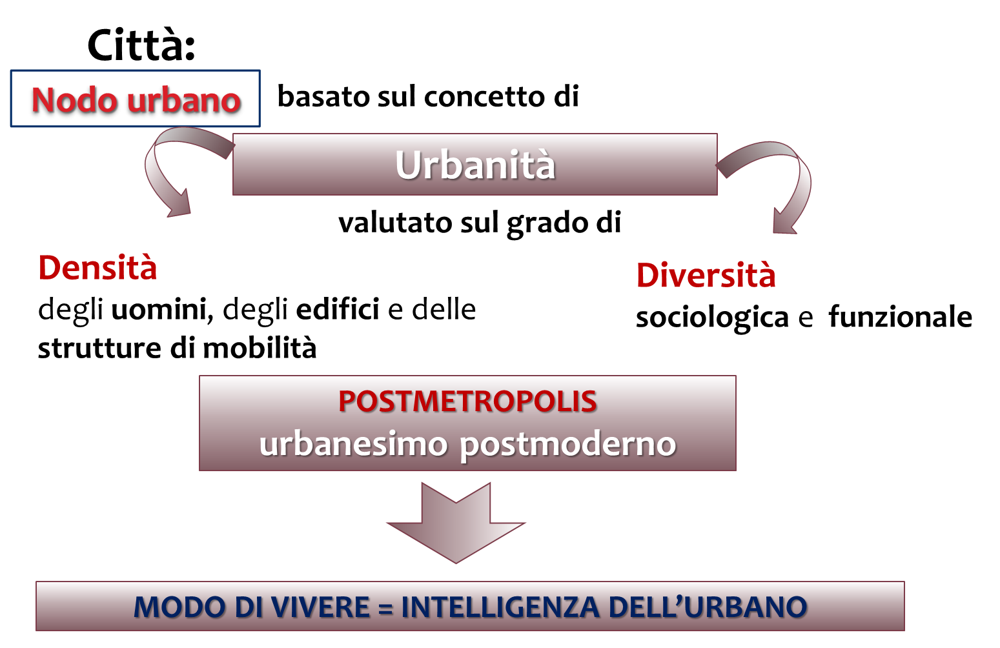

| Urbanità |
|  La
città come nodo urbano si analizza mediante l’urbanità che recupera
l’urbanesimo post-metropolitano basato sul modo di vivere dei suoi abitanti |
| L’elemento su cui si
concentra l’attuale analisi urbana, dunque, sono gli abitanti e le loro
interazioni. Su questo presupposto Jacques Lévy elabora il concetto di urbanità. Partendo dall’idea che la
città reticolare non può essere analizzata mediante i normali indici areali che
forniscono informazioni ma non spiegano i fenomeni – ossia la sua dimensione,
il numero dei residenti, le sue funzioni compartimentate, ecc… – l'autore descrive la complessità del fenomeno urbano
attraverso il concetto di urbanità definendone
il grado in base a due indici: la densità,
vale a dire la distribuzione di uomini/edifici/strutture della mobilità e la diversità sociologica e funzionale di tali abitanti. Inoltre, fa derivare il regime dell’abitare dalla mobilità che informa le diverse dimensioni della società/comunità (cioè le dimensioni del vivere insieme, dell’individualità, della comunicazione, dell’economia, della politica, ecc…) e che produce individui le cui identità sono proiettate su multipli luoghi connessi, dove le città costituiscono i raccordi, le cosiddette "nodalità post-metropolitane" secondo Eduard Soja. Quest’ultimo aggiunge che la città analizzata sotto il profilo dell’urbanità prospetta un nuovo urbanesimo che va ancorato al concetto di post-metropoli il quale rifiutando la città monocentrica – che era investigata attraverso la sua produttività – si rivolge all’intelligenza dell’urbano. Considera superata l’idea di smart cities – che partiva dal presupposto che le smart technologies costituissero l’elemento essenziale del XX secolo – e sottolinea come le tecnologie non siano sufficienti a rendere intelligente la città. L’intelligenza dell’urbano è raggiunta quando le infrastrutture smart sono centrate sui reali bisogni degli abitanti e questi ultimi non vengono più visti come soggetti passivi, ma innalzati al loro ruolo di costruttori e utilizzatori proattivi della città. Dunque si tratta di una città innovativa, che deve essere esperta di tecnologie ma deve anche attuare processi di empowerment sociale, i quali si realizzano recuperando lo spatial capital, ossia l’insieme di conoscenze e competenze possedute dagli abitanti, mediante processi partecipativi. Solo in questo modo gli abitanti potranno contribuire con la loro esperienza dei luoghi a riprogettarli e successivamente ad animarli. |